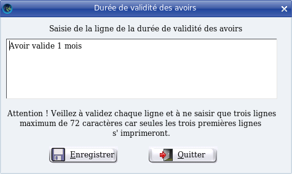

~ Laurux.Pos ~

~ Laurux.Pos ~ |
|
|
|
Table du libellé des avoirs.

Cet
écran permet de définir le texte qui sera imprimé lors de la saisie des
avoirs. Il apparaitra en haut du ticket et c'est la raison pour
laquelle, en saisie de caisse, l'avoir se determinera en début de
ticket.
Pour saisir le
libellé des avoirs suivez les indications qui apparaissent dans
la copie d'écran.
----------------------------------------------------------------------------------------------------------------------